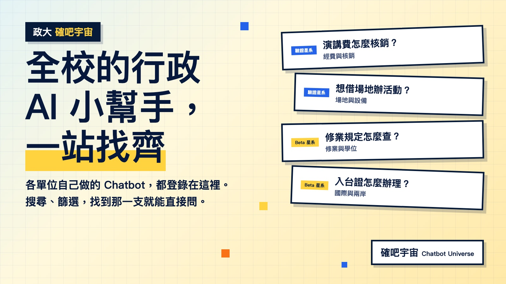

確吧宇宙
問行政問題，
一次問對。
演講費怎麼核銷？場地怎麼借？入台證怎麼辦？答案就在某個單位的 AI 小幫手裡。現在，全部集中在同一個地方。

- 49支小幫手
- 16支已驗證
- 33支 Beta
一個入口，找到全校的小幫手。
打開首頁，輸入關鍵字。或用服務對象與業務分類，一層層縮小範圍。
找到想要的那一支，按下「前往使用」，直接開始問。
不用猜該找哪個單位。不用翻公告。
每一支，都出自最懂的人。
確吧宇宙不替誰回答問題。每一支小幫手，都由各單位親手建置、親自維護。
介紹文字也是登錄單位自己寫的原文，我們一字不改。
回答僅供參考，不具公文效力。這一點，每一頁都寫得清清楚楚。
兩個星系，兩種把握。
驗證星系
通過 12 題面向的品質與法規測試，正式上架。
Beta 星系
已經登錄，尚未完成驗證。
兩區都能使用。驗證星系，多了一層把關。
想讓自己的小幫手升級？登錄時一併申請驗證，詳見確吧宇宙的登錄頁。
每一支，都有自己的家。
每支小幫手都有專屬的介紹頁：能回答什麼、大家都怎麼問、適合什麼情況，以及哪些問題不在它的範圍。
網址固定，不因改名或調整分類而失效。搜尋引擎找得到，分享給同事也只要一個連結。
想做一支自己的？
從確吧開始。它會用對話訪談你的業務，一步步產出可以直接部署的 Chatbot。做好了，登錄到確吧宇宙，全校都找得到你。